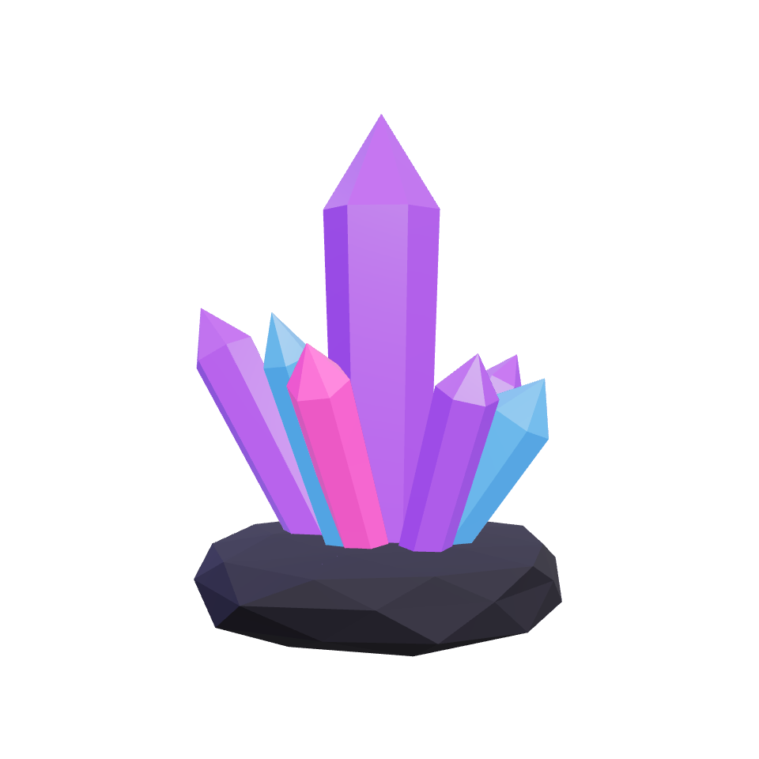

Poster first
A static image is the first paint and the fallback when WebGL is missing, the model fails or Save-Data is on.
Three.js template
Drop in your GLB model. The page paints a poster image first, starts 3D only when the browser is idle, and lowers its own resolution when a device struggles.

A static image is the first paint and the fallback when WebGL is missing, the model fails or Save-Data is on.
three.js and the model load only when the hero nears the viewport, inside an idle callback.
Pixel ratio is capped per device class, low-end devices run at 30 fps, and a governor steps resolution down under load.
With reduced motion the model holds a still pose. Rendering pauses off-screen and in background tabs.